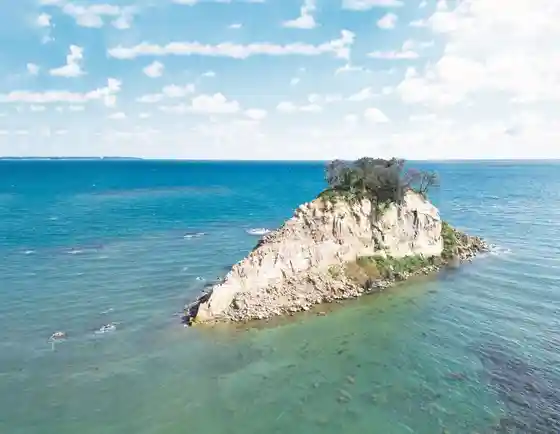
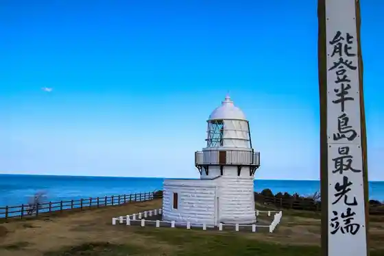
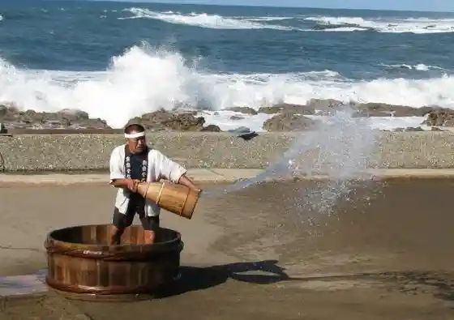

Mitsuke Shima / Gunkan Shima
Suzu, Ishikawa · 0768-82-7776 · Official / source link

Rokko Saki Rokko Saki Lighthouse (Tsusho : Noroshi no Lighthouse)
Suzu, Ishikawa · 0768-82-7776 · Official / source link

Roadside Station Suzu Shioda Village
Suzu, Ishikawa · 0768-87-2040 · Official / source link

Suzu Misaki
Suzu, Ishikawa · 0768-82-7776 · Official / source link
Roadside Station
Suzu, Ishikawa · 0768-82-4688 · Official / source link
Roadside Station Noroshi Shumatsu Eigyochu
Suzu, Ishikawa · 0768-86-2525 · Official / source link
Suzu Onsen no Toji So
Suzu, Ishikawa · 0768-84-1621 · Official / source link
Ki no Ura Birejji
Suzu, Ishikawa · 0768-86-2014 · Official / source link
Gojira Iwa
Suzu, Ishikawa · 0768-82-7776 · Official / source link
Suzu Beach Hotel Reiwa 6 Nen (2024 Nen) Noto Han Shima Jishin no Eikyo Niyori Tomen no Kan Ippan no Ho no Eigyo Wo Kyushi Shiteorimasu
Suzu, Ishikawa · 0768-82-7000 · Official / source link
Ki no Uromi Iki Park
Suzu, Ishikawa · 0768-82-7776 · Official / source link
Suzu Shrine
Suzu, Ishikawa · 0768-88-2772 · Official / source link
Ni Shichi no Asa City
Suzu, Ishikawa · Official / source link
no to Kiriopun Garden 2026
Suzu, Ishikawa · 0768-26-2303 · Official / source link
Uma Setsu Coast
Suzu, Ishikawa · 0768-82-7776 · Official / source link
Suzu Yaki Kan Reiwa 6 Nen (2024 Nen) Noto Han Shima Jishin no Eikyo Niyori Tomen no Kan Rinji Kyukanchu
Suzu, Ishikawa · 0768-82-5073 · Official / source link
Hakusan Shrine
Suzu, Ishikawa · 0768-82-7776 · Official / source link
Heiji Tadashi Kyo Oyobi Sono no Ichizoku no Fun
Suzu, Ishikawa · 0768-82-7776 · Official / source link
Rifuresshu Village Hachigasaki
Suzu, Ishikawa · 0768-82-7776 · Official / source link
Makoto Ura Coast
Suzu, Ishikawa · 0768-82-7776 · Official / source link
Suzu Seien
Suzu, Ishikawa · 0768-87-8080 · Official / source link
Hitoshi Ko Coast
Suzu, Ishikawa · 0768-82-7776 · Official / source link
Takara Tateyama
Suzu, Ishikawa · 0768-82-7776 · Official / source link
Hachigasakigabin
Suzu, Ishikawa · 0768-82-4322 · Official / source link
Hachigasaki Beach
Suzu, Ishikawa · 0768-82-4322 · Official / source link
Suzu Ritsu Suzu Yaki Museum
Suzu, Ishikawa · 0768-82-6200 · Official / source link
Taosa Sugi
Suzu, Ishikawa · 0768-82-7776 · Official / source link
Sogen Shuzo
Suzu, Ishikawa · 0768-84-1314 · Official / source link
Chi Watari Ngo Sono
Suzu, Ishikawa · 0768-82-3017 · Official / source link
Otani Toge
Suzu, Ishikawa · 0768-82-7776 · Official / source link
Kasuga Shrine
Suzu, Ishikawa · 0768-82-0130 · Official / source link
Yorimichi Pakingu (Jike)
Suzu, Ishikawa · 0768-88-2808 · Official / source link
So Gen Tera
Suzu, Ishikawa · 0768-82-6200 · Official / source link
Kuromaru Ie
Suzu, Ishikawa · 0768-82-5792 · Official / source link
Seiho Tera Koyo Ato
Suzu, Ishikawa · 0768-82-6200 · Official / source link
Yamabushi Yama Shaso
Suzu, Ishikawa · 0768-82-7776 · Official / source link
Kura Saki Coast
Suzu, Ishikawa · 0768-82-7776 · Official / source link
Toku Ho no Sembon Tsubaki
Suzu, Ishikawa · 0768-82-7776 · Official / source link
Sutoroku Joba Club Hanamuke
Suzu, Ishikawa · 0768-86-2225 · Official / source link
Ei Zendera Yama Kofun Gun
Suzu, Ishikawa · 0768-82-6200 · Official / source link
Heiji Tadashi Kahi
Suzu, Ishikawa · 0768-82-7776 · Official / source link
Sunatori Fushi Minyo Hi
Suzu, Ishikawa · 0768-82-7776 · Official / source link
Suzu Togei Center
Suzu, Ishikawa · 0768-82-3221 · Official / source link
Otomo Iemochi Kahi (Suzu Kasuga Jinja Keidai)
Suzu, Ishikawa · 0768-82-6200 · Official / source link
Cafe Cove
Suzu, Ishikawa · 0768-86-2663 · Official / source link
13 Dai Ki Village Shonosuke no Hi
Suzu, Ishikawa · 0768-82-7776 · Official / source link
Osaki Shima
Suzu, Ishikawa · 0768-82-7776 · Official / source link
Sunatori Fushi
Suzu, Ishikawa · 0768-82-7776 · Official / source link
Kotoe In
Suzu, Ishikawa · 0768-88-2730 · Official / source link
Yamaguchi Seiko Kuhi
Suzu, Ishikawa · 0768-82-7776 · Official / source link
Oto Museum (Raporuto Suzu Nai)
Suzu, Ishikawa · 0768-82-8200 · Official / source link
Sashi Ami Experience
Suzu, Ishikawa · 0768-82-4688 · Official / source link
(Ari) Shinkai Shio Sangyo
Suzu, Ishikawa · 0768-87-8140 · Official / source link
Mizuhara Shuoshi Kuhi
Suzu, Ishikawa · 0768-82-7780 · Official / source link
Resutoran Hamanaka
Suzu, Ishikawa · 0768-82-2595 · Official / source link
Suzu Nai Yokoana Kofun Gun
Suzu, Ishikawa · 0768-82-6200 · Official / source link
Suzu Kanko Boranteiagaido (Suzu Orakata Annainin)
Suzu, Ishikawa · 0768-82-4688 · Official / source link
Suzu Yakusho
Suzu, Ishikawa · 0768-82-2222 · Official / source link